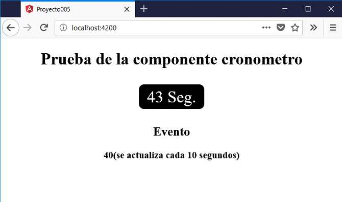

En el concepto anterior vimos al final como podemos pasar un dato mediante el 'property binding' (la variable 'valor1' se encuentra definida en la clase):
<app-dado [valor]="valor1"></app-dado>
Ahora veremos como podemos captura un evento en la componente padre que emite la componente hija:
<app-cronometro [inicio]="15" (multiplo10)="actualizar($event)"></app-cronometro>
En esta componente tenemos una propiedad llamada inicio que le enviamos un dato y capturamos un evento llamado 'multiplo10' que emite la componente app-cronometro.
Confeccionar una aplicación con dos componentes llamadas 'AppComponent' y 'CronometroComponent'. La componente 'CronometroComponent' muestra un cronómetro que se actualiza cada un segundo, cada vez que su valor es múltiplo de 10 informa a la componente padre de dicha situación informando el segundo actual.
La componente 'AppComponent' define un cronómetro e informa cada vez que el cronómetro tiene un valor múltiplo de 10.
Desde la línea de comandos de Node.js procedemos a crear el proyecto005:
f:\angularya> ng new proyecto005
Primero descendemos a la carpeta proyecto005 y nuevamente desde la línea de comandos procedemos a crear la componente 'cronometro' escribiendo:
f:\angularya\proyecto005> ng generate component cronometro
Recordemos que al ejecutar este comando se crean 4 archivos y se modifica uno.
Además dentro de la carpeta 'app' se crea una carpeta llamada 'cronometro' y dentro de ella se localizan los cuatro archivos creados.
El archivo que se modifica es 'app.module.ts' donde podemos comprobar que se importa la componente que acabamos de crear:
import { BrowserModule } from '@angular/platform-browser';
import { NgModule } from '@angular/core';
import { AppComponent } from './app.component';
import { CronometroComponent } from './cronometro/cronometro.component';
@NgModule({
declarations: [
AppComponent,
CronometroComponent
],
imports: [
BrowserModule
],
providers: [],
bootstrap: [AppComponent]
})
export class AppModule { }
Es decir que ahora nuestro módulo tiene 2 componentes:
declarations: [
AppComponent,
CronometroComponent
],
En nuestro tercer paso vamos a implementar la vista de la componente 'cronometro' y su modelo. Abrimos el archivo 'cronometro.component.ts' y codificamos:
import { Component, OnInit, Input, Output, EventEmitter } from '@angular/core';
@Component({
selector: 'app-cronometro',
templateUrl: './cronometro.component.html',
styleUrls: ['./cronometro.component.css']
})
export class CronometroComponent implements OnInit {
segundo=0;
@Input() inicio: number=0;
@Output() multiplo10 = new EventEmitter();
constructor() { }
ngOnInit() {
this.segundo = this.inicio;
setInterval(() => {
this.segundo++;
if (this.segundo % 10 == 0)
this.multiplo10.emit(this.segundo);
}, 1000);
}
}
En la clase CronometroComponent podemos identificar la sintaxis para definir un evento:
@Output() multiplo10 = new EventEmitter();
Para definir el decorador @Output() debemos importar:
import { Component, OnInit, Input, Output, EventEmitter } from '@angular/core';
Codificamos ahora el archivo 'cronometro.component.html':
<div class="cronometro">
{{segundo}} Seg.
</div>
Para definir la hoja de estilo del 'cronometro' abrimos el archivo 'cronometro.component.css' y codificamos:
.cronometro {
width: 8rem;
height: 3rem;
font-size: 2rem;
color:white;
background-color: black;
border-radius: 10px;
display: inline-flex;
justify-content: center;
align-items: center;
margin:10px;
}
Abrimos ahora el archivo 'app.component.html' y remplazamos su contenido con la definición de un cronometro y un mensaje que se muestra mediante interpolación:
<div style="text-align:center">
<h1>Prueba de la componente cronometro</h1>
<app-cronometro [inicio]="15" (multiplo10)="actualizar($event)"></app-cronometro>
<h2>Evento</h2>
<h3>{{mensaje}}</h3>
</div>
Ahora codificamos la clase AppComponent donde definimos el método que captura el evento emitido por el cronómetro:
import { Component } from '@angular/core';
@Component({
selector: 'app-root',
templateUrl: './app.component.html',
styleUrls: ['./app.component.css']
})
export class AppComponent {
mensaje='';
actualizar(t: number) {
this.mensaje = t + '(se actualiza cada 10 segundos)';
}
}
Si ejecutamos ahora el proyecto:
ng server -o
Podemos ver que cada vez que el cronómetro tiene un valor múltiplo de 10 la componente principal actualiza un mensaje gracias al evento que emite la componente 'cronometro':
Podemos probar esta aplicación en la web aquí.